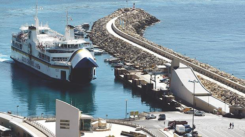

Notícias Nacionais de Malta
sexta-feira, 10 de junho de 2017, 12 : 15
Os passageiros de Gozo queixam-se sobre a falta de vagas de estacionamento
Levando 2 horas para atravessar o canal entre as ilhas
Os passageiros que atravessam o canal entre Malta e Gozo todos os dias estão reclamando da falta de lugares de estacionamento no terminal de Mġarr, insistindo que muitas vezes não têm mais nenhuma opção, senão estacionar em Għajnsielem e caminhar até o porto.
Falando a este jornal sob a condição de anonimato, os passageiros disseram que vários moradores de Gozo que viajavam para Malta todos os dias estavam se juntando para se queixar da "situação injusta" no porto.
Eles argumentaram que, além de demorar duas horas para viajar entre as ilhas, dependendo do clima e do trânsito, eles também estavam lutando para encontrar lugares de estacionamento em Mġarr.
A área, segundo eles, acomoda cerca de 160 carros, porém a maioria das vagas são muitas vezes ocupadas por empresas de aluguel de carros.
Vagas adicionais também foram bloqueadas para a equipe do canal Gozo.
"Nós já sentimos que eles não deveriam tomar pontos por motivos comerciais de um parque de estacionamento público que é supostamente exclusivo para viajantes diários, então imagine nossa consternação quando nas últimas semanas descobrimos que cerca de 25 a 30 pontos de estacionamento haviam sido reservados para 'portadores de tickets'", disse um dos passageiros.
Questionado sobre isso, o CEO da Gozo Channel, Joe Cordina, confirmou que havia um problema em Mġarr e apontou que uma série de vagas tinham que ser alocadas para a equipe da balsa, já que a maioria estava sendo tomada pelas empresas de aluguel.
Estamos cientes da situação e estamos trabalhando nisso. O problema é que, atualmente, o parque de estacionamento está aberto ao público, e as empresas de aluguel utilizam o espaço para estacionar seus veículos.
"Nós colocamos sinais que afirmam que apenas os clientes do canal Gozo podem fazer uso das vagas por um periodo de até 24 horas, mas parece que, mesmo com os guardas patrulhando a área, o abuso ainda é desenfreado", disse Cordina.
Referindo-se as 25 a 30 vagas que foram reservadas para portadores de tickets, o CEO insistiu que, apesar do controle rigoroso, com o envolvimento da empresa para patrulhar a área, além de ter alguns de seus funcionários no local, o problema aumentou até o ponto em que as vagas tiveram que ser reservadas para os funcionários.
"Não é um problema fácil de ser resolvido, porque a área de estacionamento está aberta ao público e o estacionamento não é contra uma cobrança. Mas estamos trabalhando na solução do problema, porque estamos conscientes de que muitos viajantes estão sendo afetados ", prometeu Cordina.